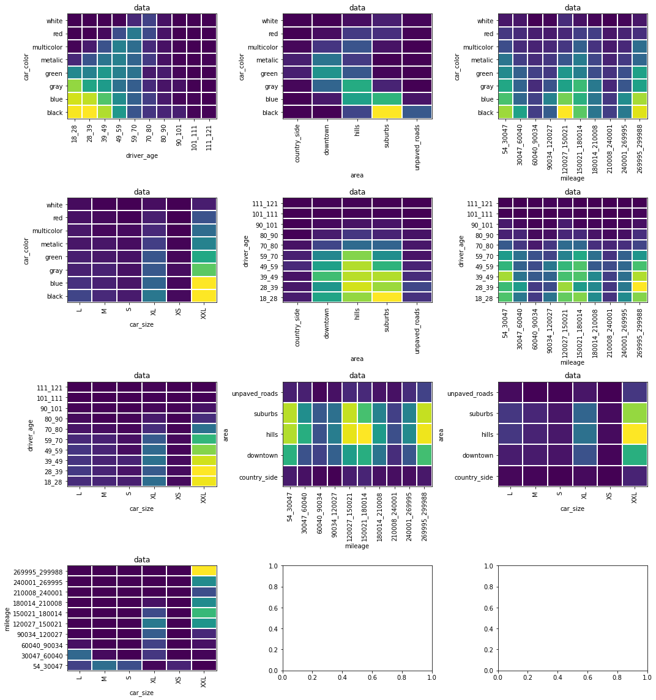
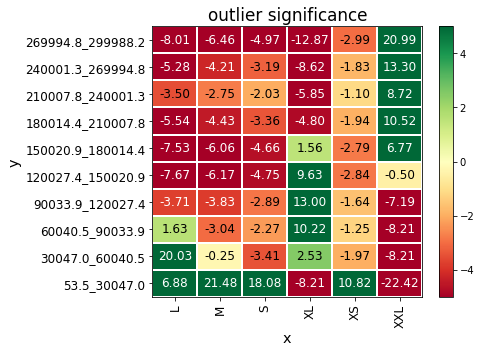
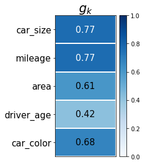
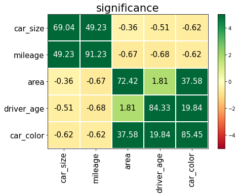
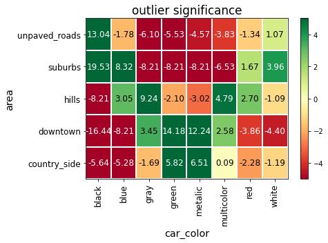
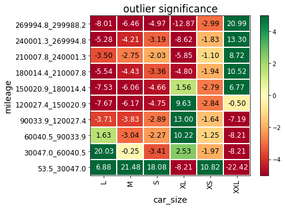
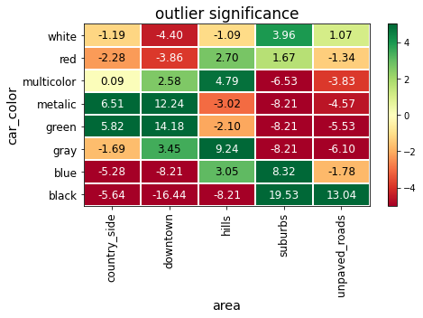
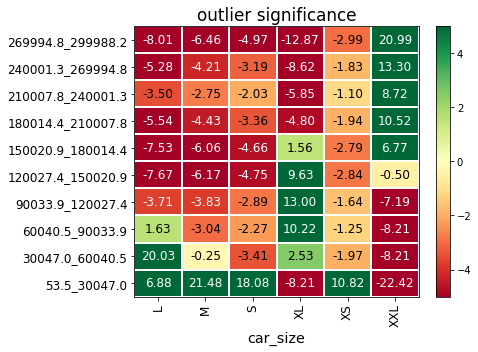

%%capture
# install phik (if not installed yet)
import sys
!"{sys.executable}" -m pip install phikPhi_K basic tutorial
This notebook guides you through the basic functionality of the phik package. The package offers functionality on three related topics:
- Phik correlation matrix
- Significance matrix
- Outlier significance matrix
For more information on the underlying theory, the user is referred to our paper.
# import standard packages
import numpy as np
import pandas as pd
import matplotlib.pyplot as plt
import itertools
import phik
from phik import resources
from phik.binning import bin_data
from phik.report import plot_correlation_matrix
%matplotlib inline# if one changes something in the phik-package one can automatically reload the package or module
%load_ext autoreload
%autoreload 2Load data
A simulated dataset is part of the phik-package. The dataset concerns fake car insurance data. Load the dataset here:
data = pd.read_csv( resources.fixture('fake_insurance_data.csv.gz') )Take a first look at the data
Let’s use a simple data.head() to get an idea of what the data looks like and inspect the different types of variables.
data.head()| car_color | driver_age | area | mileage | car_size | |
|---|---|---|---|---|---|
| 0 | black | 26.377219 | suburbs | 156806.288398 | XXL |
| 1 | black | 58.976840 | suburbs | 74400.323559 | XL |
| 2 | multicolor | 55.744988 | downtown | 267856.748015 | XXL |
| 3 | metalic | 57.629139 | downtown | 259028.249060 | XXL |
| 4 | green | 21.490637 | downtown | 110712.216080 | XL |
Specify bin types
The phik-package offers a way to calculate correlations between variables of mixed types. Variable types can be inferred automatically although we recommend variable types to be specified by the user.
Because interval type variables need to be binned in order to calculate phik and the significance, a list of interval variables is created.
data_types = {'severity': 'interval',
'driver_age':'interval',
'satisfaction':'ordinal',
'mileage':'interval',
'car_size':'ordinal',
'car_use':'ordinal',
'car_color':'categorical',
'area':'categorical'}
interval_cols = [col for col, v in data_types.items() if v=='interval' and col in data.columns]
interval_cols['driver_age', 'mileage']Visually inspect pairwise correlations
Bin the interval variables
To get a feeling for the data, let’s bin the interval variables and create 2d histograms to inspect the correlations between variables. By binning the interval variables we can treat all variable types in the same way.
# bin the interval variables
data_binned, binning_dict = bin_data(data, cols=interval_cols, retbins=True)binning_dict{'driver_age': [(18.030700817879673, 28.34523864121504),
(28.34523864121504, 38.659776464550404),
(38.659776464550404, 48.974314287885775),
(48.974314287885775, 59.288852111221146),
(59.288852111221146, 69.60338993455652),
(69.60338993455652, 79.91792775789187),
(79.91792775789187, 90.23246558122725),
(90.23246558122725, 100.54700340456262),
(100.54700340456262, 110.86154122789799),
(110.86154122789799, 121.17607905123334)],
'mileage': [(53.54305708442213, 30047.010932306846),
(30047.010932306846, 60040.478807529274),
(60040.478807529274, 90033.94668275169),
(90033.94668275169, 120027.41455797412),
(120027.41455797412, 150020.88243319656),
(150020.88243319656, 180014.35030841897),
(180014.35030841897, 210007.81818364142),
(210007.81818364142, 240001.28605886383),
(240001.28605886383, 269994.75393408624),
(269994.75393408624, 299988.2218093087)]}# plot each variable pair
plt.rc('text', usetex=False)
n=0
for i in range(len(data.columns)):
n=n+i
ncols=3
nrows=int(np.ceil(n/ncols))
fig, axes = plt.subplots(nrows, ncols, figsize=(15,4*nrows))
ndecimals = 0
for i, comb in enumerate(itertools.combinations(data_binned.columns.values, 2)):
c = int(i%ncols)
r = int((i-c)/ncols )
# get data
c0, c1 = comb
datahist = data_binned.groupby([c0,c1])[c0].count().to_frame().unstack().fillna(0)
datahist.columns = datahist.columns.droplevel()
# plot data
img = axes[r][c].pcolormesh(datahist.values, edgecolor='w', linewidth=1)
# axis ticks and tick labels
if c0 in binning_dict.keys():
ylabels = ['{1:.{0}f}_{2:.{0}f}'.format(ndecimals, binning_dict[c0][i][0], binning_dict[c0][i][1])
for i in range(len(binning_dict[c0]))]
else:
ylabels = datahist.index
if c1 in binning_dict.keys():
xlabels = ['{1:.{0}f}_{2:.{0}f}'.format(ndecimals, binning_dict[c1][i][0], binning_dict[c1][i][1])
for i in range(len(binning_dict[c1]))]
else:
xlabels = datahist.columns
# axis labels
axes[r][c].set_yticks(np.arange(len(ylabels)) + 0.5)
axes[r][c].set_xticks(np.arange(len(xlabels)) + 0.5)
axes[r][c].set_xticklabels(xlabels, rotation='vertical')
axes[r][c].set_yticklabels(ylabels, rotation='horizontal')
axes[r][c].set_xlabel(datahist.columns.name)
axes[r][c].set_ylabel(datahist.index.name)
axes[r][c].set_title('data')
plt.tight_layout()

Correlation: mileage vs car_size
From the above plots it seems like there might be an interesting a correlation between mileage and car_size. Let’s see what phik correlation is measured for this data.
x, y = data[['mileage', 'car_size']].T.values
print('phik = %.2f'%phik.phik_from_array(x, y, num_vars=['x']))
print('significance = %.2f'%phik.significance_from_array(x, y, num_vars=['x'])[1])
phik = 0.77
significance = 49.22Indeed there is a correlation between these variables and the correlation is also significant. To better understand the correlation, we can have a look at the significance of excesses and deficits in the 2-dimensional contingency table, so-called “outlier significances”.
phik.outlier_significance_from_array(x, y, num_vars=['x'])| y | L | M | S | XL | XS | XXL |
|---|---|---|---|---|---|---|
| 53.5_30047.0 | 6.882155 | 21.483476 | 18.076204 | -8.209536 | 10.820863 | -22.423985 |
| 30047.0_60040.5 | 20.034528 | -0.251737 | -3.408409 | 2.534277 | -1.973628 | -8.209536 |
| 60040.5_90033.9 | 1.627610 | -3.043497 | -2.265809 | 10.215936 | -1.246784 | -8.209536 |
| 90033.9_120027.4 | -3.711579 | -3.827278 | -2.885475 | 12.999048 | -1.638288 | -7.185622 |
| 120027.4_150020.9 | -7.665861 | -6.173001 | -4.746762 | 9.629145 | -2.841508 | -0.504521 |
| 150020.9_180014.4 | -7.533189 | -6.063786 | -4.660049 | 1.559370 | -2.785049 | 6.765549 |
| 180014.4_210007.8 | -5.541940 | -4.425929 | -3.360023 | -4.802787 | -1.942469 | 10.520540 |
| 210007.8_240001.3 | -3.496905 | -2.745103 | -2.030802 | -5.850529 | -1.100873 | 8.723925 |
| 240001.3_269994.8 | -5.275976 | -4.207164 | -3.186534 | -8.616464 | -1.830944 | 13.303101 |
| 269994.8_299988.2 | -8.014016 | -6.458253 | -4.973240 | -12.868389 | -2.989055 | 20.992824 |
The values displayed in the matrix are the significances of the outlier frequencies, i.e. a large value means that the measured frequency for that bin is significantly different from the expected frequency in that bin.
Let’s visualise for easier interpretation.
outlier_signifs = phik.outlier_significance_from_array(x, y, num_vars=['x'])
zvalues = outlier_signifs.values
xlabels = outlier_signifs.columns
ylabels = outlier_signifs.index
xlabel = 'x'
ylabel = 'y'
plot_correlation_matrix(zvalues, x_labels=xlabels, y_labels=ylabels,
x_label=xlabel,y_label=ylabel,
vmin=-5, vmax=5, title='outlier significance',
identity_layout=False, fontsize_factor=1.2)
\(\phi_k\) functions for dataframes
In our data we have 5 different columns, meaning we have to evaluate 4+3+2+1=10 pairs of variables for possible correlations. In a large dataset, with many different variables, this can easily become a cumbersome task. Can we do this more efficient? yes! We have provided functions that work on dataframes, to allow you to calculate the phik correlation, significance and outlier significance for all different variable combinations at once.
The functions are by default available after import of the phik package.
\(\phi_k\) correlation matrix
Now let’s start calculating the phik correlation coefficient between pairs of variables.
Note that the original dataset is used as input, the binning of interval variables is done automatically.
phik_overview = data.phik_matrix(interval_cols=interval_cols)
phik_overview| car_color | driver_age | area | mileage | car_size | |
|---|---|---|---|---|---|
| car_color | 1.000000 | 0.389671 | 0.590456 | 0.000000 | 0.000000 |
| driver_age | 0.389671 | 1.000000 | 0.105506 | 0.000000 | 0.000000 |
| area | 0.590456 | 0.105506 | 1.000000 | 0.000000 | 0.000000 |
| mileage | 0.000000 | 0.000000 | 0.000000 | 1.000000 | 0.768589 |
| car_size | 0.000000 | 0.000000 | 0.000000 | 0.768589 | 1.000000 |
When no interval columns are provided, the code makes an educated guess
data.phik_matrix()interval columns not set, guessing: ['driver_age', 'mileage']| car_color | driver_age | area | mileage | car_size | |
|---|---|---|---|---|---|
| car_color | 1.000000 | 0.389671 | 0.590456 | 0.000000 | 0.000000 |
| driver_age | 0.389671 | 1.000000 | 0.105506 | 0.000000 | 0.000000 |
| area | 0.590456 | 0.105506 | 1.000000 | 0.000000 | 0.000000 |
| mileage | 0.000000 | 0.000000 | 0.000000 | 1.000000 | 0.768589 |
| car_size | 0.000000 | 0.000000 | 0.000000 | 0.768589 | 1.000000 |
plot_correlation_matrix(phik_overview.values, x_labels=phik_overview.columns, y_labels=phik_overview.index,
vmin=0, vmax=1, color_map='Blues', title=r'correlation $\phi_K$', fontsize_factor=1.5,
figsize=(7,5.5))
plt.tight_layout()
Global correlation: \(g_k\)
The global correlation coefficient is a measure of the total correlation of one variable to all other variables in the dataset. They give an indication of how well on variable can be modelled in terms of the other variables. A calculation of the global correlation coefficient is provided within the phik package.
global_correlation, global_labels = data.global_phik(interval_cols=interval_cols)
for c, l in zip(global_correlation, global_labels):
print(l, c[0])car_color 0.6760316805291614
driver_age 0.41913014836289686
area 0.6057526929030086
mileage 0.7685888294891848
car_size 0.7685888294891848plot_correlation_matrix(global_correlation, x_labels=[''], y_labels=global_labels,
vmin=0, vmax=1, figsize=(3.5,4),
color_map='Blues', title=r'$g_k$',
fontsize_factor=1.5)
plt.tight_layout()
Statistical significance of the correlation: \(Z\)-score
When assessing correlations it is good practise to evaluate both the correlation and the significance of the correlation: a large correlation may be statistically insignificant, and vice versa a small correlation may be very significant. For instance, scipy.stats.pearsonr returns both the pearson correlation and the p-value. Similarly, the phik package offers functionality the calculate a significance matrix. Significance is defined as:
\[Z = \Phi^{-1}(1-p)\ ;\quad \Phi(z)=\frac{1}{\sqrt{2\pi}} \int_{-\infty}^{z} e^{-t^{2}/2}\,{\rm d}t \]
Several corrections to the ‘standard’ p-value calculation are taken into account, making the method more robust for low statistics and sparse data cases. The user is referred to our paper for more details.
As a result, the calculation may take a few seconds.
significance_overview = data.significance_matrix(interval_cols=interval_cols)
significance_overview| car_color | driver_age | area | mileage | car_size | |
|---|---|---|---|---|---|
| car_color | 85.454073 | 19.839441 | 37.584186 | -0.622065 | -0.620222 |
| driver_age | 19.839441 | 84.331822 | 1.814443 | -0.679303 | -0.509666 |
| area | 37.584186 | 1.814443 | 72.420956 | -0.666399 | -0.361338 |
| mileage | -0.622065 | -0.679303 | -0.666399 | 91.229648 | 49.233473 |
| car_size | -0.620222 | -0.509666 | -0.361338 | 49.233473 | 69.041094 |
plot_correlation_matrix(significance_overview.fillna(0).values, x_labels=significance_overview.columns,
y_labels=significance_overview.index, vmin=-5, vmax=5, title='significance',
usetex=False, fontsize_factor=1.5, figsize=(7,5.5))
plt.tight_layout()
Outlier significance
The normal pearson correlation between two interval variables is easy to interpret. However, the phik correlation between two variables of mixed type is not always easy to interpret, especially when it concerns categorical variables. Therefore, functionality is provided to detect “outliers”: excesses and deficits over the expected frequencies in the contingency table of two variables.
Example 1: car_color versus area
For the categorical variable pair car_color - area we measured:
\[\phi_k = 0.59 \, ,\quad\quad \mathrm{significance} = 37.6\]
Let’s use the outlier significance functionality to gain a better understanding of the significance correlation between car color and area.
c1 = 'car_color'
c0 = 'area'outlier_signifs, binning_dict = data[[c0,c1]].outlier_significance_matrix(retbins=True)
outlier_signifs| car_color | black | blue | gray | green | metalic | multicolor | red | white |
|---|---|---|---|---|---|---|---|---|
| area | ||||||||
| country_side | -5.636485 | -5.277175 | -1.688032 | 5.824664 | 6.506020 | 0.092630 | -2.282290 | -1.193468 |
| downtown | -16.444319 | -8.209536 | 3.450521 | 14.176441 | 12.238785 | 2.582260 | -3.863796 | -4.400847 |
| hills | -8.209536 | 3.054306 | 9.244711 | -2.097600 | -3.022553 | 4.789665 | 2.695864 | -1.092375 |
| suburbs | 19.533221 | 8.315558 | -8.209536 | -8.209536 | -8.209536 | -6.529846 | 1.667814 | 3.964555 |
| unpaved_roads | 13.043553 | -1.776804 | -6.095289 | -5.532779 | -4.566500 | -3.829519 | -1.339881 | 1.074386 |
zvalues = outlier_signifs.values
xlabels = binning_dict[c1] if c1 in binning_dict.keys() else outlier_signifs.columns
ylabels = binning_dict[c0] if c0 in binning_dict.keys() else outlier_signifs.index
xlabel = c1
ylabel = c0
plot_correlation_matrix(zvalues, x_labels=xlabels, y_labels=ylabels,
x_label=xlabel,y_label=ylabel,
vmin=-5, vmax=5, title='outlier significance',
identity_layout=False, fontsize_factor=1.2)
The significance of each cell is expressed in terms of Z (one-sided).
Interesting, owners of a green car are more likely to live in the country side, and black cars are more likely to travel on unpaved roads!
Example 2: mileage versus car_size
For the categorical variable pair mileage - car_size we measured:
\[\phi_k = 0.77 \, ,\quad\quad \mathrm{significance} = 46.3\]
Let’s use the outlier significance functionality to gain a better understanding of this significance correlation between mileage and car size.
c0 = 'mileage'
c1 = 'car_size'
tmp_interval_cols = ['mileage']outlier_signifs, binning_dict = data[[c0,c1]].outlier_significance_matrix(interval_cols=tmp_interval_cols,
retbins=True)
outlier_signifs| car_size | L | M | S | XL | XS | XXL |
|---|---|---|---|---|---|---|
| 53.5_30047.0 | 6.882155 | 21.483476 | 18.076204 | -8.209536 | 10.820863 | -22.423985 |
| 30047.0_60040.5 | 20.034528 | -0.251737 | -3.408409 | 2.534277 | -1.973628 | -8.209536 |
| 60040.5_90033.9 | 1.627610 | -3.043497 | -2.265809 | 10.215936 | -1.246784 | -8.209536 |
| 90033.9_120027.4 | -3.711579 | -3.827278 | -2.885475 | 12.999048 | -1.638288 | -7.185622 |
| 120027.4_150020.9 | -7.665861 | -6.173001 | -4.746762 | 9.629145 | -2.841508 | -0.504521 |
| 150020.9_180014.4 | -7.533189 | -6.063786 | -4.660049 | 1.559370 | -2.785049 | 6.765549 |
| 180014.4_210007.8 | -5.541940 | -4.425929 | -3.360023 | -4.802787 | -1.942469 | 10.520540 |
| 210007.8_240001.3 | -3.496905 | -2.745103 | -2.030802 | -5.850529 | -1.100873 | 8.723925 |
| 240001.3_269994.8 | -5.275976 | -4.207164 | -3.186534 | -8.616464 | -1.830944 | 13.303101 |
| 269994.8_299988.2 | -8.014016 | -6.458253 | -4.973240 | -12.868389 | -2.989055 | 20.992824 |
Note that the interval variable mileage is binned automatically in 10 uniformly spaced bins!
zvalues = outlier_signifs.values
xlabels = outlier_signifs.columns
ylabels = outlier_signifs.index
xlabel = c1
ylabel = c0
plot_correlation_matrix(zvalues, x_labels=xlabels, y_labels=ylabels,
x_label=xlabel,y_label=ylabel,
vmin=-5, vmax=5, title='outlier significance',
identity_layout=False, fontsize_factor=1.2)
Correlation report
A full correlation report can be created automatically for a dataset by pairwise evaluation of all correlations, significances and outlier significances.
Note that for a dataset with many different columns the number of outlier significances plots can grow large very rapidly. Therefore, the feature is implemented to only evaluate outlier significances for those variable pairs with a significance and correlation larger than the given thresholds.
from phik import report
rep = report.correlation_report(data, significance_threshold=3, correlation_threshold=0.5)interval columns not set, guessing: ['driver_age', 'mileage']


Recap
To summarize, the main functions in the phik correlation package working on a dataframe are:
df[twocols].hist2d()orseries.hist2d(other_series)df.phik_matrix()df.global_phik()df.significance_matrix()df[twocols].outlier_significance_matrix()orseries.hist2d(other_series)df.outlier_significance_matrices()
data[['driver_age', 'mileage']].hist2d()
# Alternatively: data['driver_age'].hist2d(data['mileage'])interval columns not set, guessing: ['driver_age', 'mileage']| mileage | 1 | 2 | 3 | 4 | 5 | 6 | 7 | 8 | 9 | 10 |
|---|---|---|---|---|---|---|---|---|---|---|
| driver_age | ||||||||||
| 1 | 54.0 | 30.0 | 13.0 | 29.0 | 57.0 | 61.0 | 36.0 | 11.0 | 36.0 | 61.0 |
| 2 | 51.0 | 41.0 | 13.0 | 17.0 | 64.0 | 41.0 | 35.0 | 12.0 | 30.0 | 75.0 |
| 3 | 65.0 | 29.0 | 21.0 | 24.0 | 53.0 | 54.0 | 35.0 | 14.0 | 27.0 | 66.0 |
| 4 | 49.0 | 23.0 | 17.0 | 30.0 | 50.0 | 54.0 | 21.0 | 17.0 | 25.0 | 53.0 |
| 5 | 41.0 | 28.0 | 19.0 | 15.0 | 33.0 | 45.0 | 27.0 | 11.0 | 23.0 | 39.0 |
| 6 | 21.0 | 12.0 | 5.0 | 12.0 | 26.0 | 25.0 | 10.0 | 8.0 | 10.0 | 15.0 |
| 7 | 7.0 | 8.0 | 2.0 | 3.0 | 8.0 | 9.0 | 4.0 | 2.0 | 3.0 | 10.0 |
| 8 | 5.0 | 2.0 | 0.0 | 1.0 | 6.0 | 1.0 | 1.0 | 1.0 | 1.0 | 3.0 |
| 9 | 0.0 | 0.0 | 0.0 | 0.0 | 1.0 | 0.0 | 0.0 | 0.0 | 0.0 | 1.0 |
| 10 | 0.0 | 0.0 | 0.0 | 1.0 | 1.0 | 0.0 | 0.0 | 0.0 | 0.0 | 0.0 |
data.phik_matrix()interval columns not set, guessing: ['driver_age', 'mileage']| car_color | driver_age | area | mileage | car_size | |
|---|---|---|---|---|---|
| car_color | 1.000000 | 0.389671 | 0.590456 | 0.000000 | 0.000000 |
| driver_age | 0.389671 | 1.000000 | 0.105506 | 0.000000 | 0.000000 |
| area | 0.590456 | 0.105506 | 1.000000 | 0.000000 | 0.000000 |
| mileage | 0.000000 | 0.000000 | 0.000000 | 1.000000 | 0.768589 |
| car_size | 0.000000 | 0.000000 | 0.000000 | 0.768589 | 1.000000 |
data.global_phik()interval columns not set, guessing: ['driver_age', 'mileage'](array([[0.67603168],
[0.41913015],
[0.60575269],
[0.76858883],
[0.76858883]]),
array(['car_color', 'driver_age', 'area', 'mileage', 'car_size'],
dtype=object))data.significance_matrix()interval columns not set, guessing: ['driver_age', 'mileage']| car_color | driver_age | area | mileage | car_size | |
|---|---|---|---|---|---|
| car_color | 85.468302 | 19.787607 | 37.609394 | -0.634132 | -0.586560 |
| driver_age | 19.787607 | 84.314315 | 1.857272 | -0.586955 | -0.532817 |
| area | 37.609394 | 1.857272 | 72.400210 | -0.593527 | -0.334542 |
| mileage | -0.634132 | -0.586955 | -0.593527 | 91.221584 | 49.249503 |
| car_size | -0.586560 | -0.532817 | -0.334542 | 49.249503 | 69.047125 |
data[['area', 'mileage']].outlier_significance_matrix()interval columns not set, guessing: ['mileage']| 53.5_30047.0 | 30047.0_60040.5 | 60040.5_90033.9 | 90033.9_120027.4 | 120027.4_150020.9 | 150020.9_180014.4 | 180014.4_210007.8 | 210007.8_240001.3 | 240001.3_269994.8 | 269994.8_299988.2 | |
|---|---|---|---|---|---|---|---|---|---|---|
| area | ||||||||||
| country_side | -0.178204 | 0.192584 | 0.099073 | -1.818924 | 0.103907 | 0.888225 | 0.251480 | 1.491532 | 0.016080 | -0.869129 |
| downtown | 0.625586 | -2.141106 | 0.541785 | 0.931452 | -0.926177 | 0.582585 | 0.917301 | -0.729204 | -0.978248 | 0.610302 |
| hills | -0.826807 | 1.346029 | -0.841090 | 0.008498 | 0.071356 | 1.028940 | 0.107051 | 0.080217 | -0.397630 | -0.904236 |
| suburbs | 0.972621 | 0.098196 | 0.712079 | -0.059975 | 0.975536 | -1.759184 | -0.716170 | -0.603623 | 0.059615 | -0.050745 |
| unpaved_roads | -1.469438 | 0.518041 | -0.915745 | -0.475005 | -0.679357 | -0.545607 | -0.808321 | 0.901333 | 2.175620 | 1.339934 |
os_matrices = data.outlier_significance_matrices()interval columns not set, guessing: ['driver_age', 'mileage']os_matrices.keys()dict_keys(['car_color:driver_age', 'car_color:area', 'car_color:mileage', 'car_color:car_size', 'driver_age:area', 'driver_age:mileage', 'driver_age:car_size', 'area:mileage', 'area:car_size', 'mileage:car_size'])os_matrices['car_color:mileage']| 53.5_30047.0 | 30047.0_60040.5 | 60040.5_90033.9 | 90033.9_120027.4 | 120027.4_150020.9 | 150020.9_180014.4 | 180014.4_210007.8 | 210007.8_240001.3 | 240001.3_269994.8 | 269994.8_299988.2 | |
|---|---|---|---|---|---|---|---|---|---|---|
| car_color | ||||||||||
| black | 0.366425 | 1.387093 | -1.320194 | -1.274558 | 1.908010 | -0.880578 | -1.260293 | -0.498607 | -0.449794 | 0.492858 |
| blue | -0.409760 | -1.676495 | -0.515491 | 1.969650 | 0.474818 | -1.260466 | -0.505987 | -0.575699 | 1.675451 | 0.601026 |
| gray | 0.267888 | -0.338430 | -1.148378 | 0.048682 | -0.238285 | 1.522769 | 1.282298 | -0.812279 | -0.589854 | -0.887127 |
| green | -0.195906 | 0.399471 | 1.306739 | -0.918723 | 0.373229 | -0.859866 | -0.862544 | 0.772096 | -0.169912 | 0.471057 |
| metalic | 0.697184 | -0.385806 | 0.672620 | 0.205599 | -1.543500 | 1.168147 | 0.249471 | 0.513459 | -0.174870 | -0.952009 |
| multicolor | -0.478862 | -0.591987 | 0.893783 | 0.050843 | -2.104857 | 0.994621 | 0.109020 | 0.578461 | -0.506460 | 1.287415 |
| red | -0.551106 | 0.548949 | 1.370043 | -0.050064 | -1.822748 | 0.055521 | 2.208175 | 0.921955 | 0.219336 | -1.556492 |
| white | -0.055025 | 1.219026 | -0.596627 | -0.427730 | 1.888206 | -0.471175 | -0.851352 | -0.393054 | -0.697834 | -0.323899 |